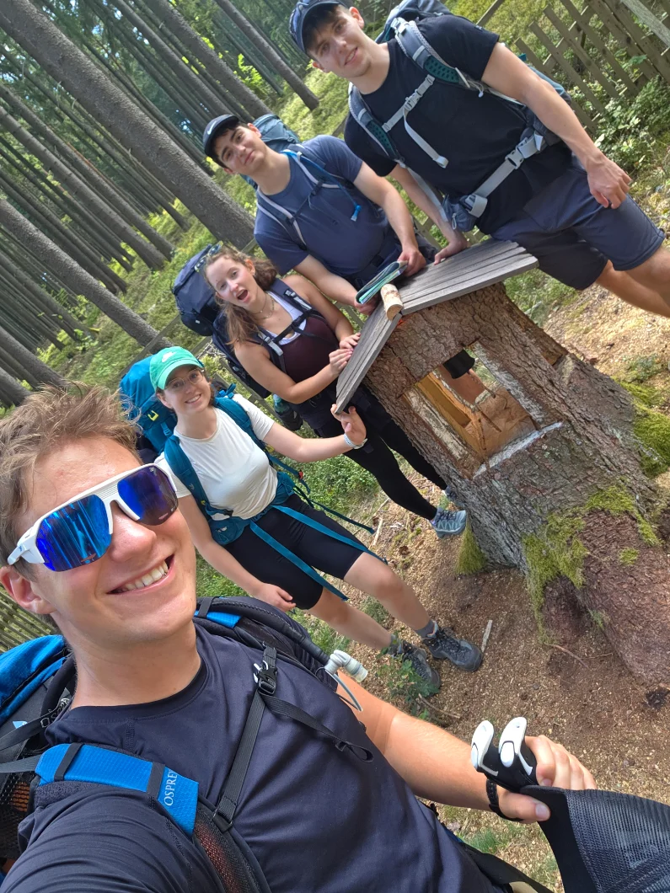
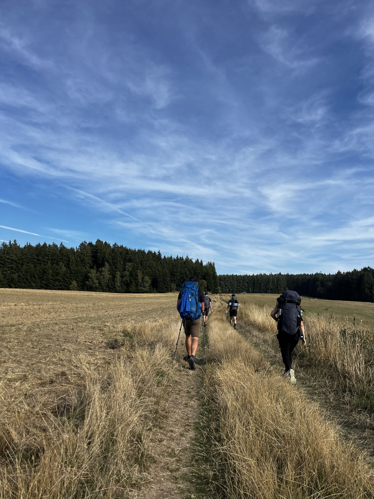
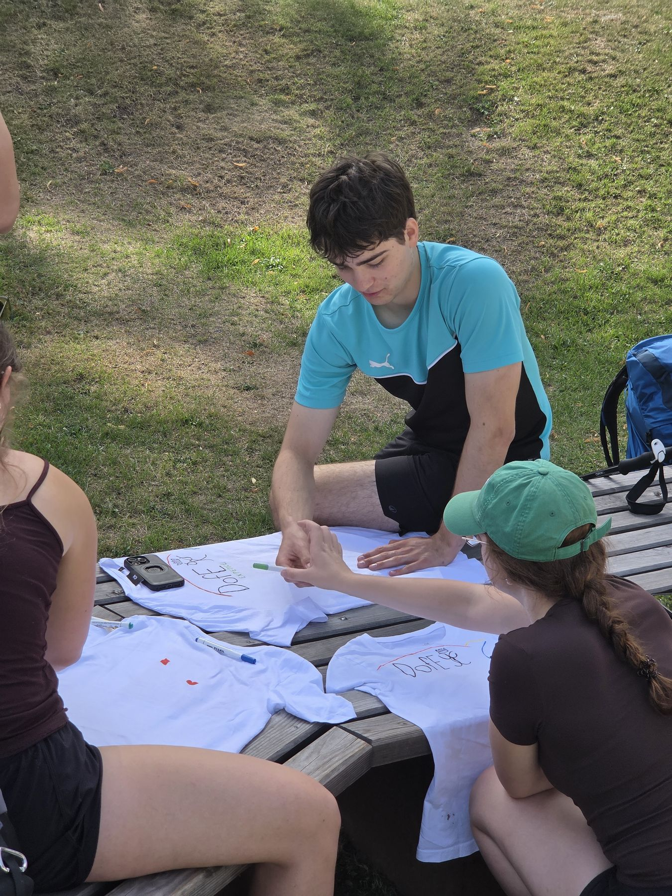
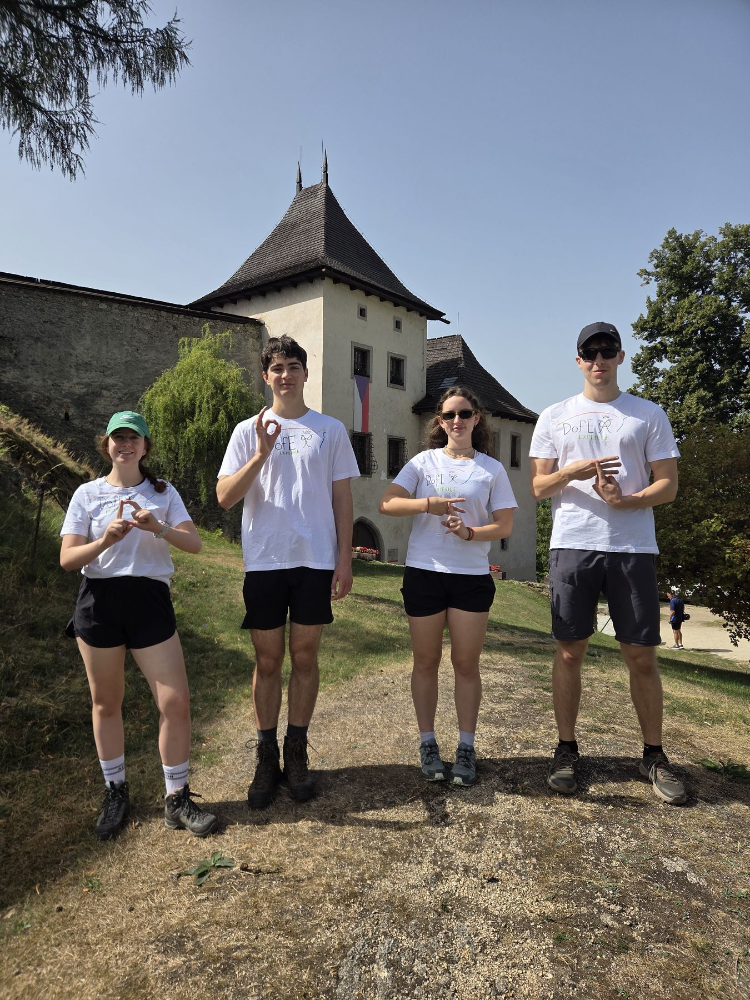
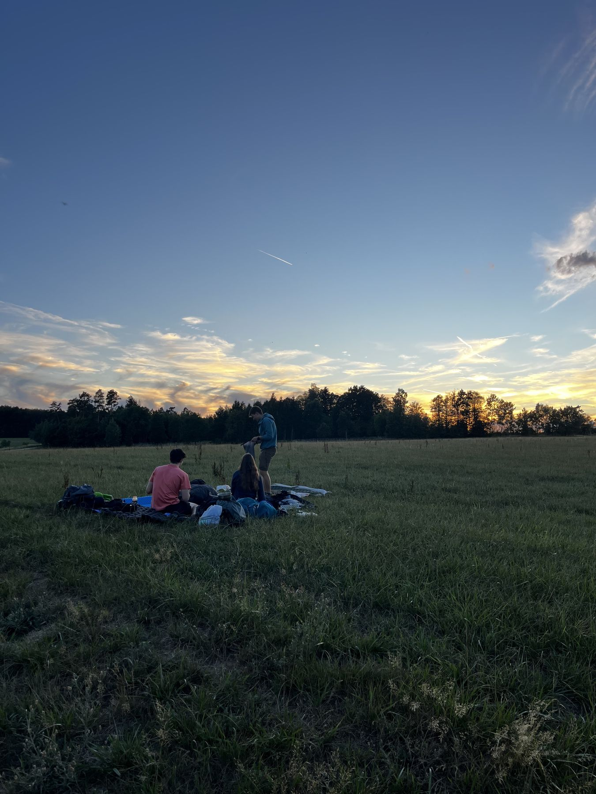
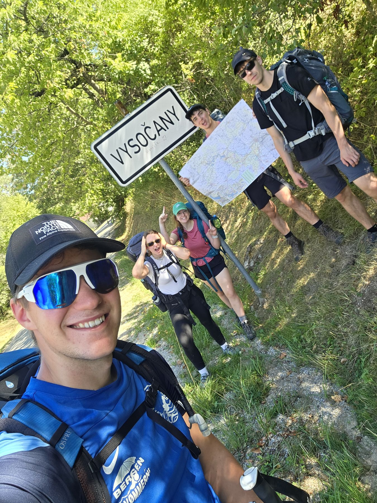

27. Srpna jsme společně vydali na stříbrnou expedici. Sešli jsme se ráno na Hlavním nádraží v Praze a vlakem vyrazili do Veselí nad Lužnicí. Pak jsme přesedli na autobus a popojeli do Jindřichova Hradce, kde se k nám připojila ještě Maru.On 27 August we set off together on our Silver expedition. We met in the morning at Prague main station and took the train to Veselí nad Lužnicí. Then we changed to a bus and rode on to Jindřichův Hradec, where Maru joined us.
Bylo nás tedy celkově pět, Já, Maru, Tobi, Pavel a vedoucí naší expedice Štěpán. V Jindřichově Hradci jsme si také dali v COOP naše poslední koupené jídlo, které bylo sice trochu provizorní, ale dobré :). Následně vyrazili posledním autobusem do Nové Bystřice, kde mohl naše expedice doopravdy začít.So there were five of us in total: me, Maru, Tobi, Pavel and our expedition leader Štěpán. In Jindřichův Hradec we also had our last shop-bought meal from the COOP, which was a bit makeshift but good :). Then we caught the last bus to Nová Bystřice, where our expedition could really begin.
Nová Bystřice → Landštejn
Udělali jsme ještě pár fotek, podepsali se na pohled pro dofáky a podle papírové mapy začali hledat cestu.We took a few more photos, signed a postcard for the DofE team and started finding our way with a paper map.
Navigace se ujal Tobi. Nazačátku jsme byli sice všichni trochu zmatení a museli jsme se hned několikrát vracet zpátky, ale po pár kilometrech už jsme se nějak zorientovali (teda hlavně Tobi :) a nevraceli jsme se skoro vůbec.Tobi took charge of navigation. At first we were all a bit confused and had to turn back several times, but after a few kilometres we got our bearings (well, mostly Tobi :) and hardly had to turn back at all.
Šli jsme po žluté turistické stezce a musím říct, že byla naše naplánovaná trasa opravdu krásná. Šli jsme po lesích, kde jsme našli dřevěné domky s různými postavičkami, šli jsme z kopce a pak zase do kopce a zastavili jsme se na krátkou přestávku i u kláštera ve vesnici Klášter. V jednom místě jsme byli jen trochu zmatení, protože naše trasa vedla přes les, kde zrovna probíhala těžba dřeva a na zemi bylo napsáno, že je vstup zakázán. Rozhodli jsme se les tedy obejít, což se nakonec povedlo a ani jsme se neztratili.We followed the yellow hiking trail, and I have to say our planned route was really beautiful. We walked through forests where we found little wooden houses with all kinds of figures, went downhill and then uphill again, and stopped for a short break by the monastery in the village of Klášter. At one point we got a bit confused, because our route led through a forest where logging was going on and a sign on the ground said no entry. So we decided to walk around the forest, which worked out in the end, and we didn’t even get lost.


Vodu jsme si doplnili v pumpě na návsi, která sice chutnala trochu podezřele, ale nakonec byla úplně v pohodě a přišla nám opravdu vhod, protože už jsme byli téměř na suchu. Měli jsme taky velice příjemnou zastávku u jezera, kde jsme poprvé vyzkoušeli Štěpánův dron, takže máme super cool záběry!We refilled our water at a pump on the village green. It tasted a little suspicious, but in the end it was completely fine and came in really handy, because we had almost run dry. We also had a really lovely stop by a lake, where we tried out Štěpán’s drone for the first time, so we have some super cool shots!
Večer jsme se zastavili ve vesnici Landštejn, těsně pod místním hradem. V lese mezi stromy jsme si rozbalili karimatky a spacáky a pustili se do vaření. Na večeři jsme měli naplánované tortilly se zeleninou a opravdu se povedly! Celková trasa nás první den vyšla na 18,9 km, takže se nám pod širým nebem usínalo opravdu lehce.In the evening we stopped in the village of Landštejn, right below the local castle. In the forest among the trees we rolled out our sleeping mats and sleeping bags and got cooking. We had planned tortillas with vegetables for dinner, and they turned out really well! The whole route came to 18.9 km on the first day, so falling asleep under the open sky was really easy.
Landštejn → Slavonice
Ačkoli jsme neměli roztaženou plachtu, vzbudili jsme se ku podivu poměrně v suchu. K snídani jsme si udělali ovesnou kaši se sirupem a sušeným ovocem, pobalili naše věci a vyrazili. Ráno nám to od probuzení do odchodu trvalo nějaké dvě hodiny a kolem 10 už jsme odcházeli. Čekala nás opravdu dlouhá a náročná cesta.Even though we hadn’t put up the tarp, we woke up surprisingly dry. For breakfast we made porridge with syrup and dried fruit, packed our things and set off. It took us about two hours in the morning from waking up to leaving, and we were on our way around 10. A really long and demanding walk was ahead of us.
První zastávka však byla už po několika set metrech hned u hradu již zmíněného hradu Landštejn. Tam jsme si rozbalili naše bílá trička a barvy a začali jsme na ně kreslit. Cílem bylo zachytit náš první den jen v několika drobných obrázcích a abychom si trička alespoň trochu sladili, nakreslili jsme dopředu ještě logo DofE. Každý si z prvního dne odnesl něco jiného, někomu utkvěla v hlavě ta nádherná příroda, zatímco někomu se nejvíc líbilo “slepé prší”, které jsme hráli večer. Když jsme měli hotovo, vše jsme nafotili a pak doopravdy vyrazili.Our first stop, though, came after just a few hundred metres, right by the Landštejn castle mentioned earlier. There we unpacked our white T-shirts and paints and started drawing on them. The goal was to capture our first day in just a few small pictures, and so that the T-shirts would match at least a little, we drew the DofE logo on them first. Everyone took something different away from the first day: for some it was the beautiful nature that stuck, while others liked the “blind prší” card game we played in the evening the most. When we were done, we took photos of everything and then really set off.


Tentokrát jsme šli po červené turistické stezce, která nás ze začátku vedla hlavně lesem, kde jsme narazili na malebnou kapličku. Oběd jsme si dali také v lese, mezi stromy a stihli jsme dokonce ještě pár rychlých her prší. Ještě s těmi těžkými batohy na zádech nebylo vstávání vůbec jednoduché, ale i tak jsme se překonali a vyrazili dál. V lese jsme ještě objevili starý vojenský bunkr a naše kroky vedli i podél místního jezera.This time we followed the red hiking trail, which at first led us mostly through forest, where we came across a picturesque little chapel. We had lunch in the forest too, among the trees, and even managed a few quick rounds of prší. Getting up again with those heavy backpacks wasn’t easy at all, but we pushed ourselves and carried on. In the forest we also discovered an old military bunker, and our path took us along a local lake as well.
Pak nás cesta zavedla do nádherné vesničky Slavonice, kde jsme si mohli odpočinout na náměstí, což bylo, alespoň v mém případě, opravdu potřeba :). Po celkových 26,7 kilometrech jsme to konečně zakotvili u místního rybníka …, ve kterém jsme se mohli za odměnu dokonce vykoupat.Then the path led us to the beautiful little town of Slavonice, where we could rest on the square, which, in my case at least, was really needed :). After 26.7 kilometres in total we finally settled by a local pond …, where we could even go for a swim as a reward.
Jelikož mělo v noci pršet, roztáhli jsme plachtu, všechny věci schovali pod ní a vrhli se na tvorbu večeře. Čekaly nás těstoviny s tuňákem a se zeleninou, což může znít možná obyčejně, ale v ten moment jsme se všichni shodli, že to je snad nejlepší jídlo, co jsme kdy jedli. V noci doopravdy pršelo a tak jsme mohli usínat se zvuky deště nad námi.Since it was supposed to rain at night, we put up the tarp, stashed all our things under it and threw ourselves into making dinner. We had pasta with tuna and vegetables, which might sound ordinary, but at that moment we all agreed it was probably the best meal we had ever eaten. It really did rain at night, so we fell asleep to the sound of rain above us.
Přes Hlubokou k hranicímThrough Hluboká to the border
Ráno nás probudilo sluníčko, rozbalili jsme si tedy věci na vaření snídaně, u vaření ranního čaje jsme ale objevili menší problém. Zjistili jsme, že nám jeden z vařičů přestal fungovat. Naštěstí jsme měli ještě jeden záložní, protože jinak bychom si nemohli uvařit ani snídani, ani večeři. I tak jsme si pobalili věci a započali naší trasu, která byla tentokrát bez Štěpána.In the morning the sun woke us up, so we unpacked our things to cook breakfast, but while making our morning tea we discovered a small problem. One of our stoves had stopped working. Luckily we had a spare, because otherwise we wouldn’t have been able to cook breakfast or dinner. Still, we packed up and started our route, this time without Štěpán.
Po cestě jsme narazili na malou vesničku … kde jsme si od nějakých hodných místních nechali doplnit vodu. Na návsi jsme si taky sedli k našim tričkům, které jsme doplnili o další obrázky. Po několika kilometrech strávených chůzí podél louky po zelené stezce jsme se zastavili ve vesnici Hluboká, kde jsme si dali oběd.Along the way we came across a small village … where some kind locals refilled our water. On the village green we also sat down with our T-shirts and added more pictures. After several kilometres of walking along a meadow on the green trail, we stopped in the village of Hluboká for lunch.
Většinu naší sobotní trasy jsme šli podél rozlehlého pole na rozpáleném sluníčku, takže bylo potřeba se pořádně namazat. Došli jsme dokonce až k oficiálním českým hranicím s Rakouskem. Cesta byla sice o něco kratší (asi 24,2 km), ale po dvou dnech chození už nám začaly ubývat síly, takže jsme si chvíli odpočinuli v místním kempu Velo. Poseděli jsme, načerpali jsme síly, ale hlavně jsme si tu doplnili pití, protože už jsme zase neměli ani kapku.We walked most of our Saturday route along a vast field in the blazing sun, so we had to put on plenty of sunscreen. We even made it all the way to the official Czech border with Austria. The route was a bit shorter (about 24.2 km), but after two days of walking our strength was starting to fade, so we rested for a while at the local Camp Velo. We sat for a bit and recharged, but above all we refilled our drinks, because we had once again run out completely.
Rozhodli jsme se utábořit na louce pod širým nebem, poblíž nádherné vyhlídky. Zatímco holky vařili večeří - tedy těstoviny s rajčatovou omáčkou a parmazánem, kluci se šli vykoupat do rybníka. Večer jsme si dali ještě pár her prší a pak už jen pozorovali hvězdy a měsíc, který byl zrovna ten den v úplňku.We decided to camp on a meadow under the open sky, near a beautiful viewpoint. While the girls cooked dinner (pasta with tomato sauce and parmesan), the boys went for a swim in the pond. In the evening we played a few more rounds of prší and then just watched the stars and the moon, which happened to be full that day.
Podhradí nad Dyjí → Vysočany
Náš poslední den začal hezky, tedy až na to že jsme měli vše mokré od ranní rosy. Najedli jsme se hezky na sluníčku, vše uklidili a vydali se do cíle. Ještě předtím jsme ale udělali druhou část naší Keen challenge, ve formě tutoriálu, jak si v přírodě vyčistit tak, aniž bychom tím ublížili přírodě. Trasa poslední den měla jen 13,1 km a vedla přes vesnici podhradí nad Dyjí, kde bylo možné si prohlédnout surrealistický Kristkův dům a bizarní výtvory kolem něj.Our last day started nicely, apart from everything being wet from the morning dew. We ate in the sunshine, tidied everything up and headed for the finish. Before that, though, we did the second part of our Keen Challenge: a tutorial on how to clean yourself in nature without harming it. The route on the last day was only 13.1 km and led through the village of Podhradí nad Dyjí, where you could see the surreal Kristek’s house and the bizarre creations around it.


Naše trasa končila ve Vysočanech, kde jsme se pořádně najedli v místní restauraci. Poté jsme popojeli autobusem do Moravských Budějovic, kde dokončili poslední část našich triček a pak už se vydali autobusem domů do Prahy.Our route ended in Vysočany, where we had a proper meal at the local restaurant. Then we took the bus to Moravské Budějovice, where we finished the last part of our T-shirts, and then headed home to Prague by bus.
Expedice se velice povedla, každý z nás se naučil spoustu nových věcí a nabral nové zkušenosti. Taky jsme tu díky DofE potkali partu úplně nových přátel se stejnými cíli a hodnotami, se kterými se můžeme navzájem inspirovat.The expedition went really well. Each of us learned lots of new things and gained new experience. Thanks to DofE we also met a group of completely new friends with the same goals and values, and we can inspire each other.